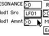
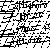
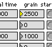

The Livor is a real-time composing environment for an unlimited number of networked computers and sound devices. Textual information is translated into musical events. The basis of the (a)tonal musical system is constructed by matching distribution patterns of characters in texts with distributions of pitches in classical tonal systems. The computer keyboard is used to generate and control sounds, pitches, and rhythms. Musical information processed by one computer can be captured and recycled by the others at any time. This picture gives an idea of the parameters that are handled in real-time by the Livor.
The CD-Slidor is an object programmed to control 4 CD-ROM players in real-time by using external inputs. Inputs generated by sensors, voice, keyboard, or mouse movements are translated into CD-ROM control commands (play, ff, rew, stop) depending on input levels. Commands are then routed to the desired CD-ROM players based on the preferences of the performer. The result of this mechanism is a highly controllable digital scratch machine.
The Dopplor is a Doppler-effect simulator controlled by mouse movement. The Dopplor interface screen provides two series of concentric circles, representing two sources of sound emission. The mouse represents a trespasser in this audio landscape. While moving about, the distance to the sound sources varies. This results in continuously changing pitches, as first observed by German-born Austrian physicist C. J. Doppler in the year 1842. In the Dopplor set-up as used by the Young Farmers, the two audio sources emit the same information. Two Art Multiverb digital multi-effect processors change the pitch of this sound information according to the mouse movement, i.e. according to the position of the trespasser in the system.
An essential part of the composition techniques by Young Farmers is the use of real-time control of their sound generators. Writing the appropriate editors is a rather dull and time-consuming activity, resulting however in total and dynamic control over machines that - in most cases - have not been conceived for that purpose. When using these editors, the possibilities of low-cost equipment can be dramatically expanded, compared to the limited factory-preset options. The next step in this area will be the development of genetic sound breeding objects, which will grow sounds while the composers have a break.
Waldorf Microwave Editor
Yamaha TX81Z Editor Art Multiverb Editor
The Pongor is the software library for the Beta than Pong project. The software is designed to react on the output of the video-tracing Steim BigEye software. The Pongor relates incoming video-information to real-time musical events.
The Assignor is a set of Max-patches for creating real-time sound parameter shifts, based on sensor values (Gloves, Goggles, Fishing rods, Microphones, Pong parameters, ...). Eight sensors, can be used to generate an unlimited amount of events, such as changing the timbre of sound modules and controlling the actions of the CD-Slidor.
All this material is property of Young Farmers Claim Future and may only be abused with permission:
Young Farmers Claim Future
Herbert Van de Sompel & Guy c. Jules Van Belle
Herbert.VandeSompel@rug.ac.be & Guy.VanBelle@rug.ac.be
{kind=link}
{kind=link}
{kind=link}
{kind=link}
{kind=link}
{kind=link}
{kind=link}